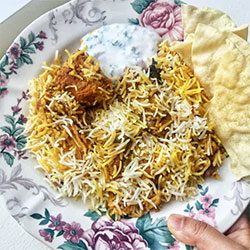

Chicken Biryani is a popular South Asian rice dish that is made with layers of spiced rice, tender chicken, caramelized onions, and a variety of aromatic spices such as cinnamon, cardamom, and cloves. The dish is typically prepared by cooking the rice and chicken separately, then layering them with fried onions and spices before being cooked together to infuse the flavors. Chicken Biryani is often served with raita, a yogurt-based condiment, and garnished with fresh herbs, such as cilantro.
Beef Tehari is a popular South Asian rice dish that originated in the Indian subcontinent and is now widely enjoyed in many countries, particularly in Pakistan and Bangladesh. It is a flavorful and aromatic dish that features tender pieces of beef cooked in a spicy, tomato-based sauce, served over a bed of long-grain basmati rice that has been infused with fragrant spices like cinnamon, cardamom, and cloves.
Mutton Kacchi Biryani RecipeKacchi Mutton Biryani is a delicious rice dish where tender goat or lamb meat pieces are marinated with lots of fried onions, whole spices, fresh herbs and yoghurt. This marinated meat sits on the bottom of the pot topped with half-cooked rice which is drizzled with saffron-infused water and more fried onions and fresh mint leaves. Sealed and slow-cooked in an oven or on stove-top to a delicious aromatic finger-licking biryani that you may serve with some kachumber, salad, and if you are like us, more pappadoms! 2020 is the year I made Kacchi Biryani more times than upma! 😁 It all started from the guilt of not making any special dish for Friday lunch which I is the gulf norm. Even five years of gulf life failed to make any difference in my Friday routine. But this year is different from my Saudi life... my lovely neighbours started sharing their Friday food very often making me feel bad that I didn't have anything to return for the kindness. I told them over a chai that I don't cook elaborate on Friday because it is my weekend too but I resolved to change that. Read More.. |
 |